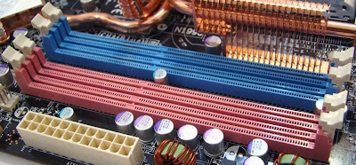
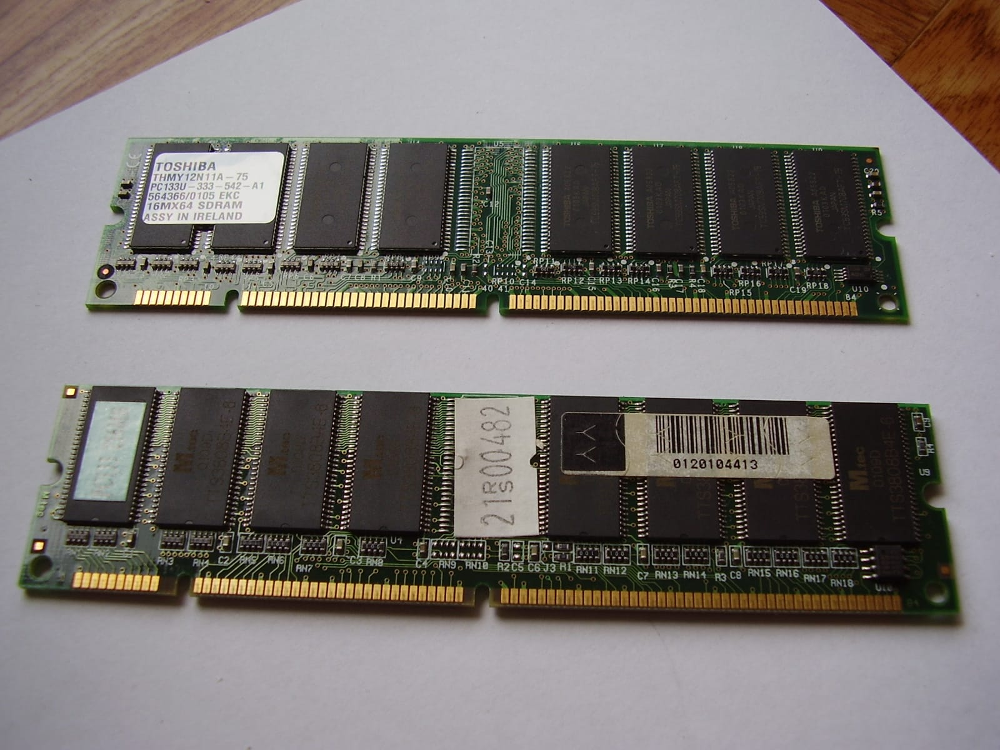

Zocalo DIMM
Los DIMM (sigla en inglés de dual in-line memory module, traducible como «módulo de memoria de dos lineas») son, al
igual que sus precedentes SIMM, módulos de memoria RAM que se conectan directamente en las ranuras de la placa base
de las computadoras personales y están constituidos por pequeños circuitos impresos que contienen circuitos
integrados de memoria. Los módulos DIMM son reconocibles externamente por tener cada contacto (o pin) de una de sus
caras separado del opuesto de la otra, a diferencia de los SIMM en que cada contacto está unido a su opuesto. La
disposición física de los DIMM duplica el número de contactos diferenciados con el bus.

